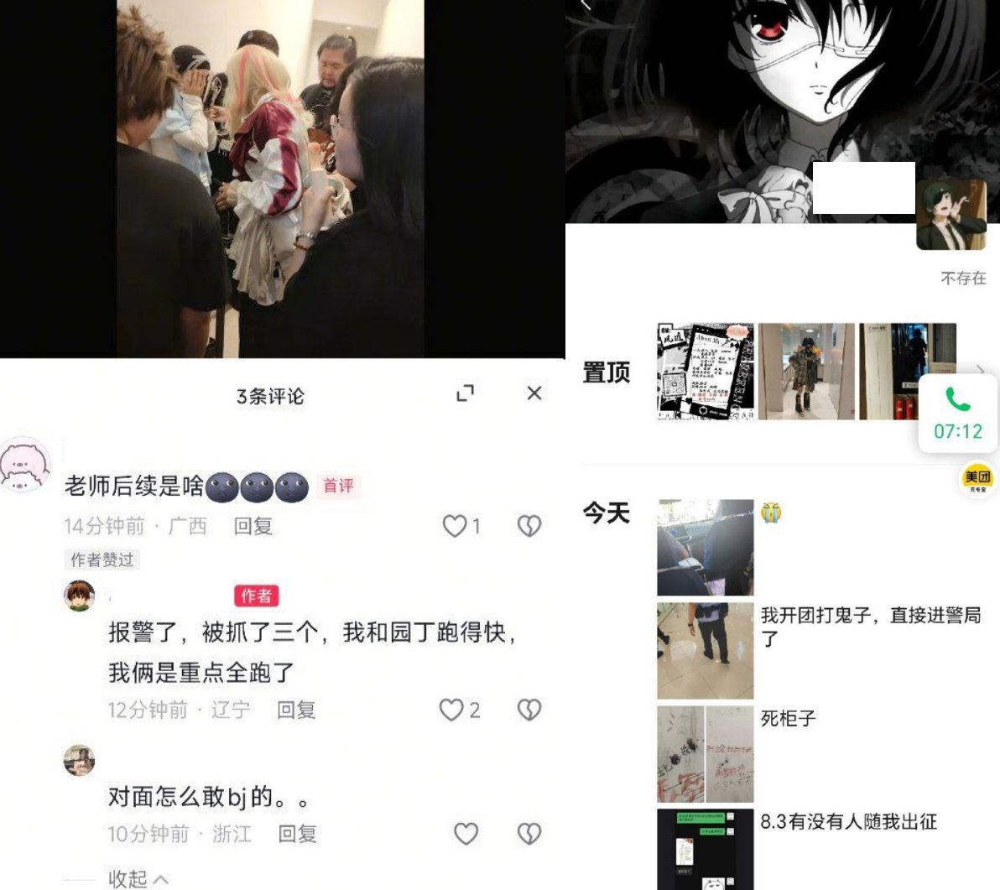

小虚空🍥
@tokerumaisurii
我的天哪我刚看成三人被捅还很开心结果只是三人被捕，这种小猪不捅能行吗，原推里面更恶心的边霸凌人边喊“请党放心，强国有我”的小猪不刀削面处置能行吗？

李老师不是你老师
@whyyoutouzhele
6月8日，再度发生有人因COS《我的英雄学院》遭遇霸凌事件
当天在辽宁省沈阳市沈阳中街商城内，一名少女因COS《我的英雄学院》中的角色，遭遇几名其他Coser的围攻。视频中，少女被一群人围在角落，随后其假发被人从背后扯掉，并引发嘲笑
据施暴者称，事后少女报警，三人被捕。但他困惑对方怎么敢报警 https://t.co/tqMvvDCyMT https://t.co/aPxrM4qaFA